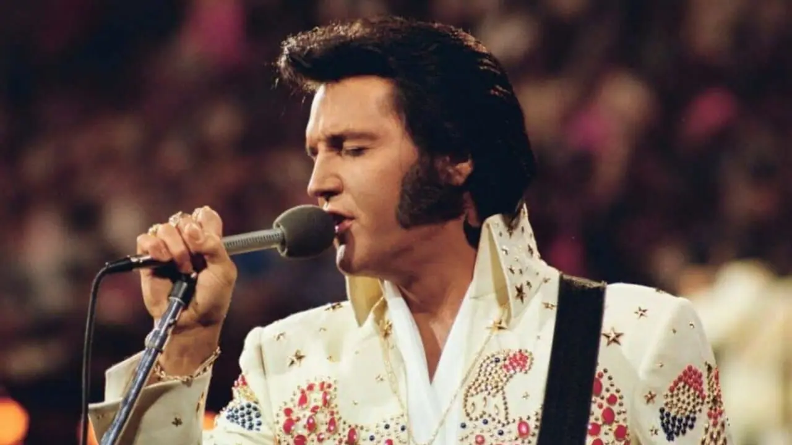

"Hey Jude" - The Beatles
"Hey Jude" é uma das músicas mais famosas dos Beatles e foi lançada em agosto de 1968. A música foi escrita por Paul McCartney e originalmente foi feita como um consolo para Julian Lennon, o filho de John Lennon, quando seus pais se separaram. McCartney escreveu a música originalmente como "Hey Jules", mas mudou para "Hey Jude" porque soava melhor. A música começa com um piano suave e depois cresce com uma orquestra de cordas, acompanhando o coro da música. A letra é muito emocional e fala sobre consolar alguém que está passando por um momento difícil, como é o caso de Julian Lennon na época em que a música foi escrita. A música tem uma das mais famosas e cativantes refrões da história da música pop: "Hey Jude, don't make it bad. Take a sad song and make it better." ("Ei, Jude, não piore as coisas. Pegue uma canção triste e a torne melhor"). A canção é marcada pela presença do coro e de um final repetitivo, onde o coro canta "na na na na-na-na-na-na-na-na-na". "Hey Jude" é uma música icônica dos Beatles e é considerada uma das melhores canções de todos os tempos. A música foi um sucesso comercial e de crítica, alcançando o topo das paradas em todo o mundo. Até hoje, é uma das músicas mais populares dos Beatles e uma das músicas mais conhecidas da música pop.

"Make your own kind of music" - Mama Cass
"Make Your Own Kind of Music" é uma música popular dos anos 60, escrita pela dupla Barry Mann e Cynthia Weil. A canção ficou mais conhecida na voz da cantora Mama Cass Elliot, integrante do grupo The Mamas & The Papas, que a gravou em 1969. A letra de "Make Your Own Kind of Music" é inspiradora e encorajadora, encorajando as pessoas a serem fiéis a si mesmas e a não terem medo de seguir seus próprios caminhos. A música começa com as palavras "Ninguém pode dizer-lhe qual é a música certa para tocar" ("Nobody can tell you what you gotta be"), o que reflete o tema central da canção: ser verdadeiro consigo mesmo. A melodia é animada e cativante, com um arranjo que mistura elementos do pop e do rock. A voz de Mama Cass Elliot dá à música uma qualidade única, com sua interpretação emotiva e poderosa. O refrão da música é um dos mais famosos da história da música pop: "Você tem que fazer a sua própria música, cantar sua própria especialidade, fazer sua própria música, mesmo que ninguém mais cante junto" ("You gotta make your own kind of music, sing your own special song, make your own kind of music, even if nobody else sings along"). "Make Your Own Kind of Music" se tornou um hino para muitos jovens na década de 60, que buscavam se expressar e encontrar sua própria identidade em meio às transformações sociais da época. Até hoje, a música é lembrada como um exemplo inspirador de autoexpressão e de ser fiel a si mesmo, independentemente do que os outros possam pensar.

"You Gave me a Mountain" - Elvis Presley
"You Gave Me a Mountain" é uma música country escrita por Marty Robbins, que foi gravada por Elvis Presley em 1973. A música é uma balada emocional sobre um homem que se sente sobrecarregado e cansado da vida, e que acredita que só a montanha pode oferecer-lhe um refúgio e um sentido de paz. A interpretação de Elvis Presley é muito comovente, com sua voz profunda e emotiva transmitindo a dor e a angústia do protagonista da música. O arranjo da canção é simples, com uma guitarra acústica e um piano acompanhando a voz de Presley. A letra da música é muito poética e evocativa, com uma forte imagem da montanha como símbolo de força e proteção. A música começa com os versos "Nasci numa chuva torrencial / Nas margens do Tennessee / Mas minha mãe me criou bem / Ela disse que um homem deve ser forte". Esses versos dão o tom da música, mostrando a luta do protagonista para enfrentar as dificuldades da vida. "You Gave Me a Mountain" é uma das músicas mais poderosas de Elvis Presley, mostrando a profundidade emocional e a habilidade vocal do cantor. A música se tornou um dos destaques do repertório de Elvis na década de 70, e até hoje é lembrada como uma das suas performances mais emocionantes e comoventes.
